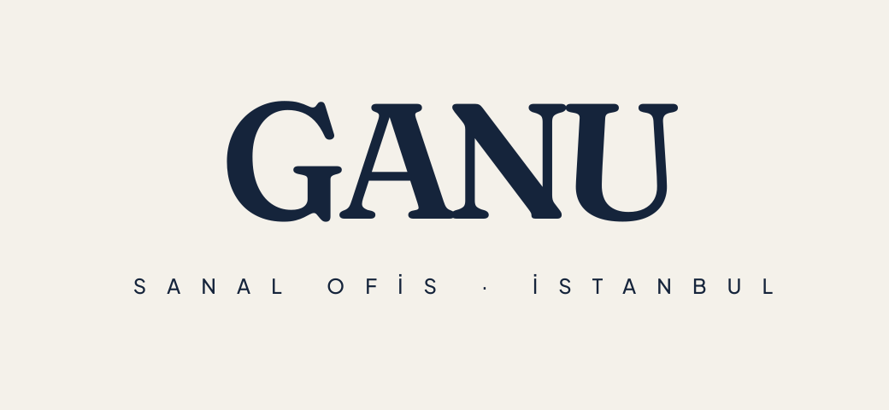
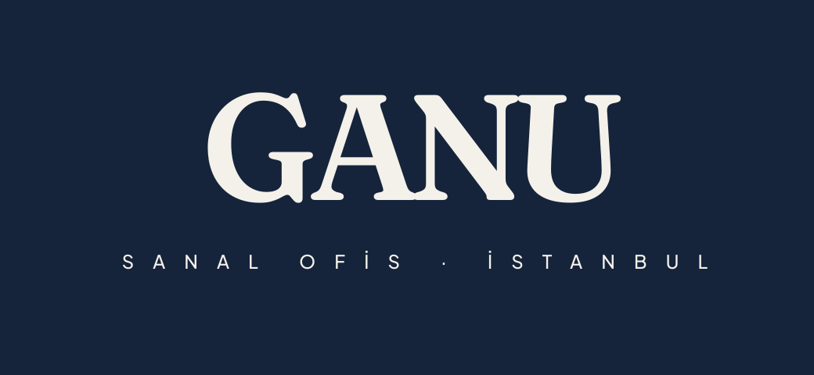
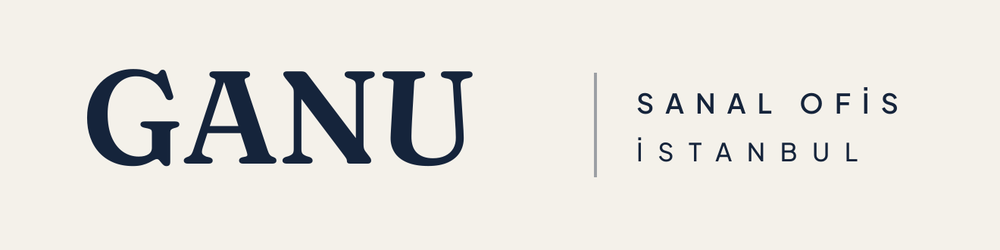
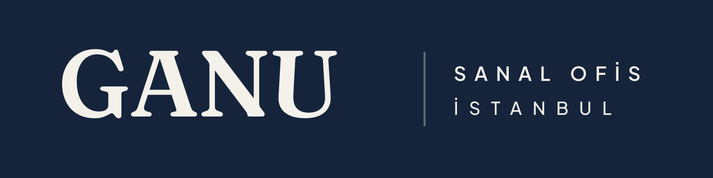
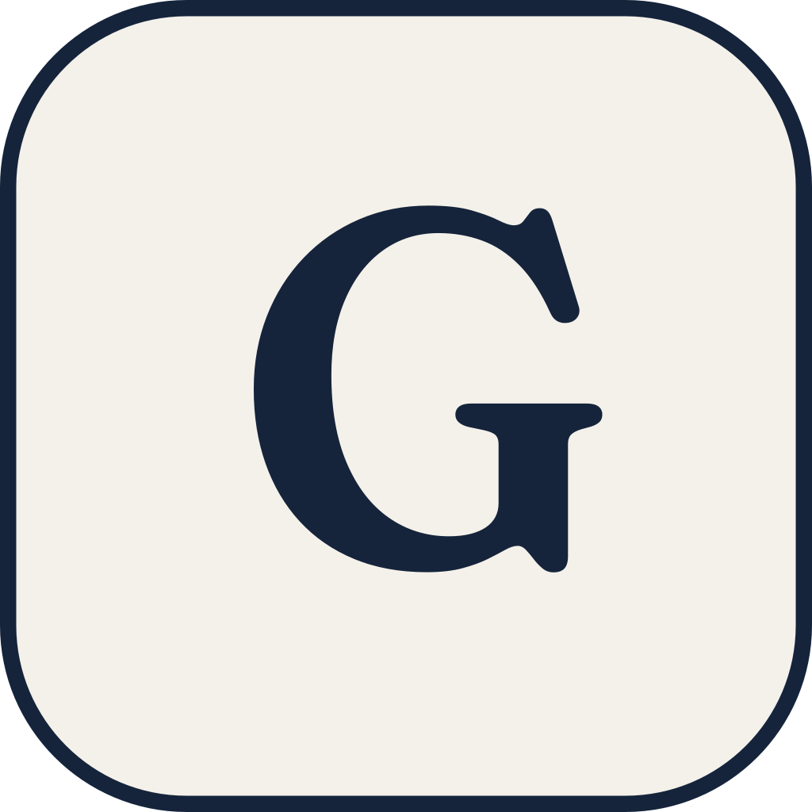
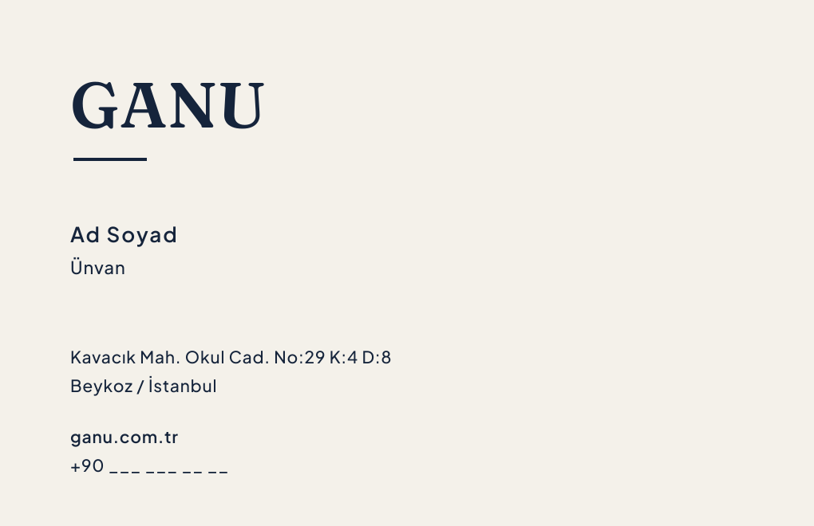

01Ana Logo (Merkez Kilit)
Birincil kullanım. Radikal sadelik: tek serif (Fraunces), tek renk lacivert, dekoratif çizgi/altın yok. Açık zeminde lacivert, koyu zeminde kemik.

Merkez kilit · açık zemin (birincil)

Merkez kilit · koyu zemin (negatif)
02Yatay Logo (Navbar / dar alan)
Web üst menüsü ve yatay/dar alanlar için. Wordmark | descriptor; ince dikey ayraç. ("G" tekrarı yok.)

Yatay · açık zemin

Yatay · koyu zemin
03Amblem / Avatar & Favicon
"G" monogramı (Fraunces). Alt çizgi yok. Daire kırpmasında (WhatsApp/IG) güvenli; 16px sekmede okunur.

Avatar · açık
04Kartvizit & Kaşe
85×55 mm. İki-tonlu olduğu için baskıda foil gerekmez; tek renk lacivert basılır. Kaşe resmi belgeler için.

Kartvizit arka
05Renk Paleti — İki Ton
Altın kaldırıldı. Sadece iki renk: zemin Kemik, her şey Gece Lacivert. Bonus: gri ton / faks / kaşe / tabela testlerinin hepsini sorunsuz geçer.
Kemik#F4F1EA · zemin, boşluk
Gece Lacivert#15243B · metin, yapı, her şey
Mürekkep (ops.)#11161F · derin koyu zemin
Kontrast: Lacivert/Kemik 13.82:1 (WCAG AAA). Saf siyah / saf beyaz kullanılmaz. Tek renk olduğu için her ortamda (ekran, baskı, kaşe, gravür) birebir taşınır.
06Tipografi
Marka adı · Fraunces 600
GANU
Descriptor · Plus Jakarta 500
SANAL OFİS · İSTANBUL
Başlık · Fraunces 600
Prestijli iş adresi, sade kurulum.
Gövde · Plus Jakarta 400/500
Şirketinizin yüzü olan adres; sözleşmeden web'e tüm süreç tek elden.
Fraunces seçildi (default Playfair yerine): daha karakterli ve "düğün davetiyesi" klişesinden uzak, küçük boyutta sağlam. Logotype daima Fraunces 600.
07Kurallar
✔ Yapılır
- Logoyu bol kemik boşlukla kullan (net alan = "G" yüksekliği).
- Açık zeminde lacivert, koyu zeminde kemik versiyonu seç.
- Küçük boyutta sadece "G" amblemi kullan.
- Tek renk: gri ton/faks/kaşede aynı logo birebir çalışır.
✘ Yapılmaz
- Altın/metalik renk veya degrade ekleme (marka iki-tonlu).
- Saf siyah / saf beyaz zemine koyma.
- Oranını bozma / eğme / gölge / 3D ekleme.
- Fontu (Fraunces) değiştirme; harf aralığını bozma.
- Düşük kontrastlı fotoğraf üzerine doğrudan oturtma.
08Net Alan
Logonun çevresinde, marka "G" harfinin yüksekliği kadar dokunulmaz boşluk bulunur.